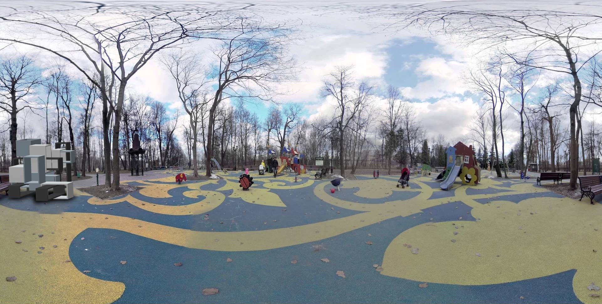
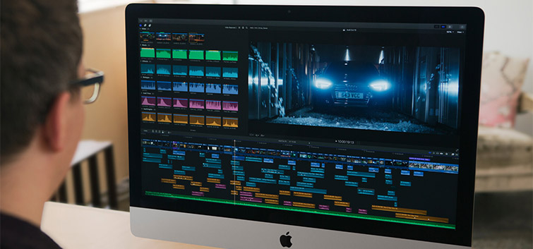
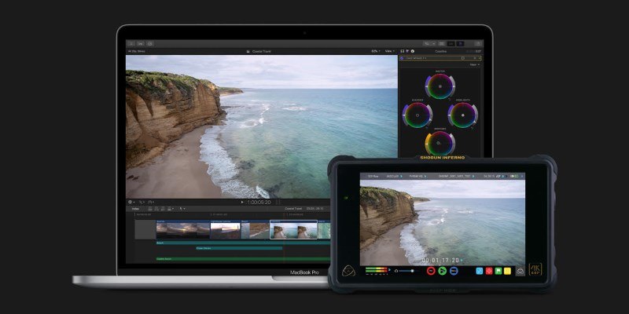

Видео в 360°.Продолжайте свою работу дальше. Во всех направлениях.
Final Cut Pro включает в себя полный набор инструментов для импорта, редактирования и доставки как моноскопического, так и стереоскопического видео на 360°.

Редактирование на 360°.
Импортируйте и отредактируйте 360° кадры в Final Cut Pro. Откройте программу просмотра 360°, чтобы увидеть вид гарнитуры вашего видеоматериала, и воспользоваться простыми инструментами для изменения ориентации, выпрямления горизонта, удаления камеры установок и многое друго.
Каждый пиксель ближе к совершенству.
Профессиональные инструменты для цветокоррекции встроены в Final Cut Pro, включая специализированный инспектор цветов с цветными колесами, цветовые кривые и кривые оттенка / насыщенности. Используйте ключевые кадры для корректировки корректировок с течением времени и применяйте камеры и творческие таблицы Look Up (LUT) для идеального просмотра.


Закрытые титры. Открыты для всех.
Final Cut Pro теперь включает в себя интуитивно понятный и всеобъемлющий набор инструментов для закрытых субтитров, без необходимости дорогого стороннего программного обеспечения или услуг. Вы можете создавать, просматривать и редактировать титры в Final Cut Pro и представлять их как часть вашего видео.